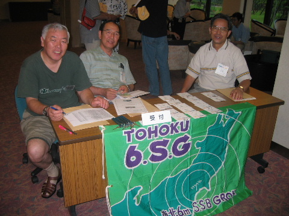
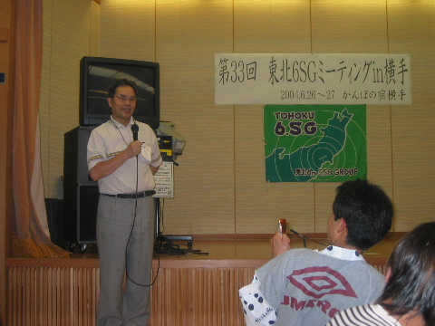
「6mミーティング2004 in よこて」の受付け/懇親会で挨拶するJA7AGL・相沢さん
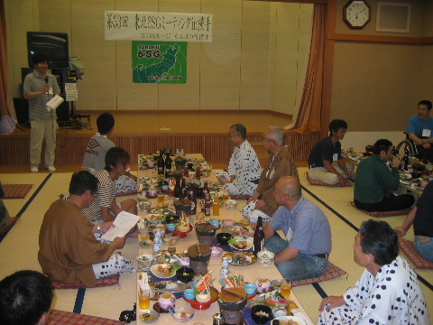
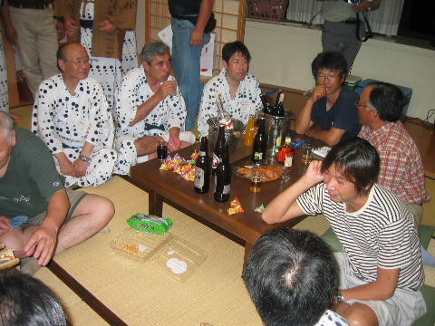
懇親会(左)/二次会の模様。
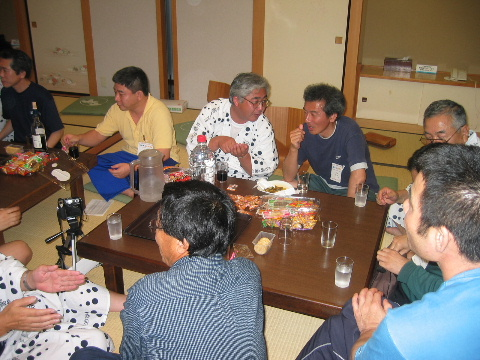
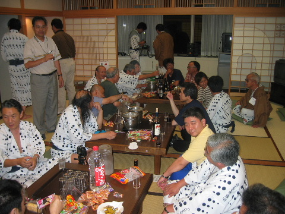
二次会の会場で
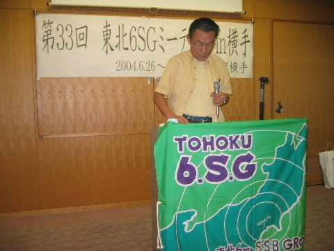
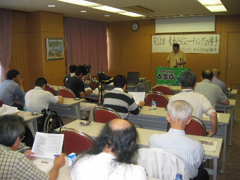
「新表示の電波形式と一括記載コード」について解説するJA1CJB・熊谷さん
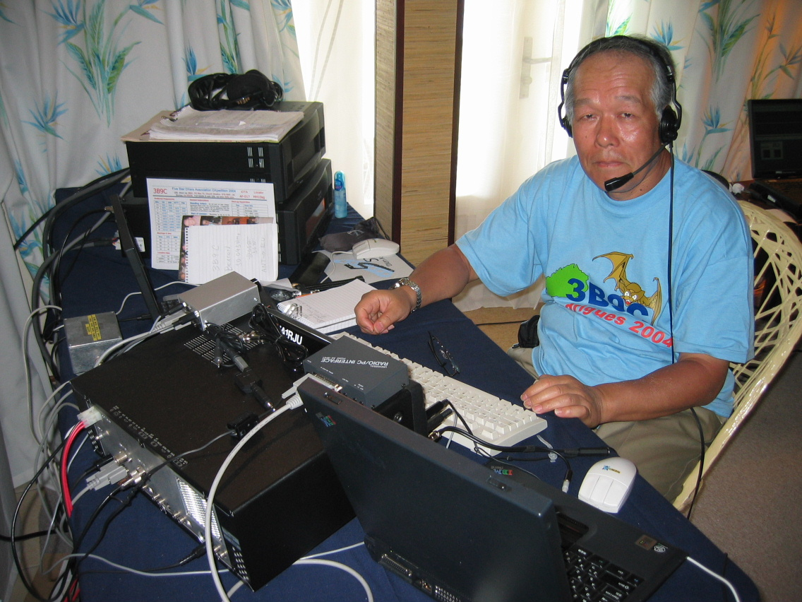
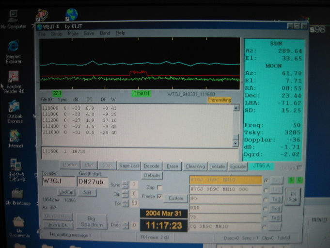
JA1RJUから「3B9CのDX-Pedition」の報告とWSJTの紹介が行われた
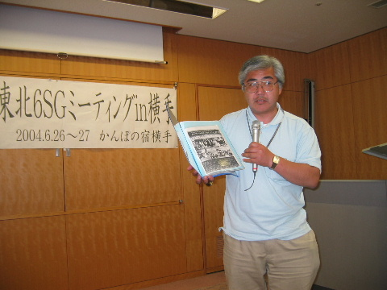
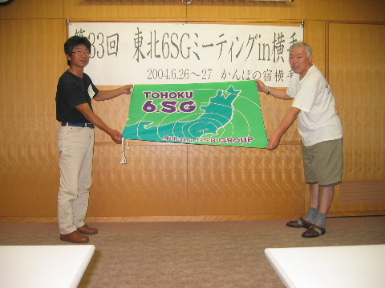
(左)6SGの全大会記録の完成を報告するJA7MIT・仁和さん
今年の開催地・秋田県(JA7EIQ＝右)から岩手県(JH7BRY)に"6SG大会旗"が手渡された。
|
◎ 第33回東北6SGミーティング in "よこて"のお知らせ(25.Feb.2004) 皆様におかれましてはご活躍の事と思います。 第33回東北6SGミーテングを次の日程で開催することにいたしましたのでお知らせ致します。 秋田県での開催は、これで5回目の開催となり、楽しいミーテングとなることを期待しております。 幹事として次の4名の方々の協力で開催準備致します。
JA7CSS 高橋 洋
JA7EIQ 小林 輝雄
JK7IKU 鎌田 慶彦
JA7AGL 相沢 喜弥
○ 開催場所 秋田県横手市睦成字城付 1-20
横手簡易保険保養センター
Tel 0182-32-5055
○ 開催日時 平成16年6月26日(土)-27日(日)
○ 会 費 ￥15,000
郵便為替口座名 小林輝雄
口座番号 02290-3-39606
参加予約金として￥5,000送金願います。
ご夫婦で参加される方は、連絡お願いします。
講演会、ジャンク交換会など予定しております。
開催場所はおなじみの場所で高速道から10分と便利で閑静な自然豊かな場所です。
詳しいお知らせは、郵便にて送ります。
PS：メールアドレスの無い方、リストにない方には連絡届きませんので皆さんからQSPお願いします。
********************************************************
Name Kiya Aizawa
Address 18-21 Ohana-Cho Omagari-City 〒014-0022
Telephone /Fax 0187-63-4661 / E-mail ja7agl@jarl.com
ja7agl@arrl.net
********************************************************
|
|
◎ IC-7800 視聴会(15.Feb.2004) 2004年2月15日(日)、秋葉原のロケット・アマチュア無線本館3階で、 アイコムの最高級トランシーバーIC-7800の視聴会が開催された。 価格が100万円とアマチュア無線の機器としては高価格でも話題となった、 HFオールバンド+50MHzの200Wのこのトランシーバーは、本格的な生産に入って売上も順調！とか。 昨年暮れにも"参考出品"として一度展示されたが、今回はアンテナも接続(HF帯のみ)され、 IC-7800の実力が体感出来た。 "エクスターナル・ディスプレイ"を接続することにより、表示部分が大型画面で見られるのは圧巻！。 |
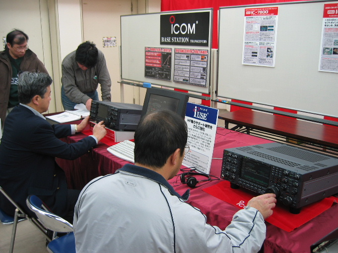
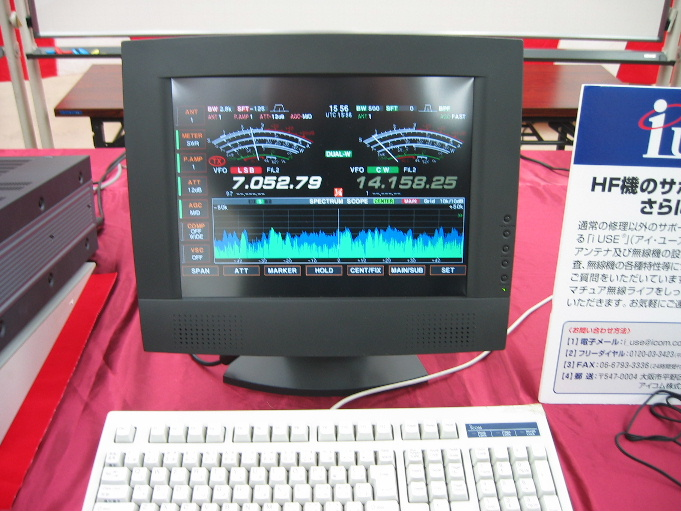
アイコムの最高機種・IC-7800の視聴会、右は外付けのディスプレイ
|
◎ "一足遅い" 新年会(15.Feb.2004) 2004年2月15日(日)東京・秋葉原で"時期はずれ"の新年会を開催。 最近の6mはコンデションも落ち、アクティビティも急落してしまったが、 話題の少ないこの時期ながら、今年から許可された6mのEMEチャレンジの話や、 サイクル23を締めるDX-Peditionの話題で盛り上がった。 |
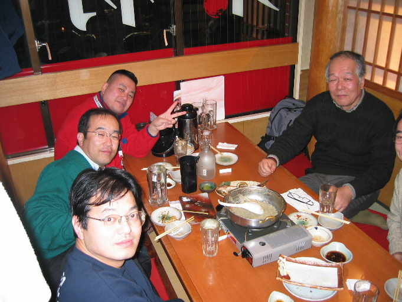
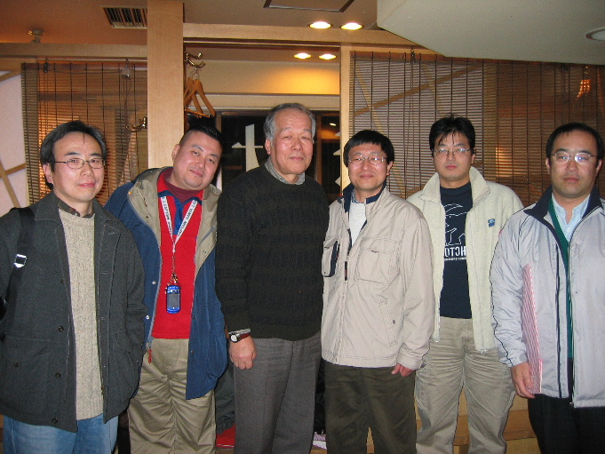
2004年新年会はサイクル23の"ビッグオープン"の話に盛り上がる
| 1997年から2005年までのミーティング資料編 |
|---|
| 1997 | 1998 | 1999 | 2000 | 2001 | 2002 | 2003 | 2004 | 2005 | 2006 | 2007 | 2008 |